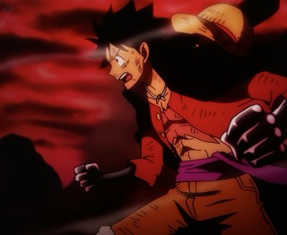
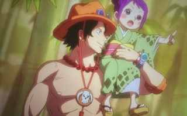

Monkey D. Luffy is the main character and captain of the Straw Hat Pirates. He is my favorite character because he is a loyal and determined guy with a goofy personality. He has a big heart and is always willing to help his friends when danger is near. He is strong and lives freely, which is admirable. He ate the Gomu Gomu no Mi (the real name of it being the Hito Hito no Mi, model: Nika (Sun God/Warrior of Liberation) - the Human Human fruit), which gives him the ability to stretch his body like rubber.

Portgas D. Ace is the second division commander of the Whitebeard pirates and also one of Luffy's older brothers. He is my favorite supporting character because is a strong and caring guy, who is always looking out for Luffy. He is son of the Pirate King, Gol D. Roger and he ate the Mera Mera no Mi, which gives him the ability to create and control fire.